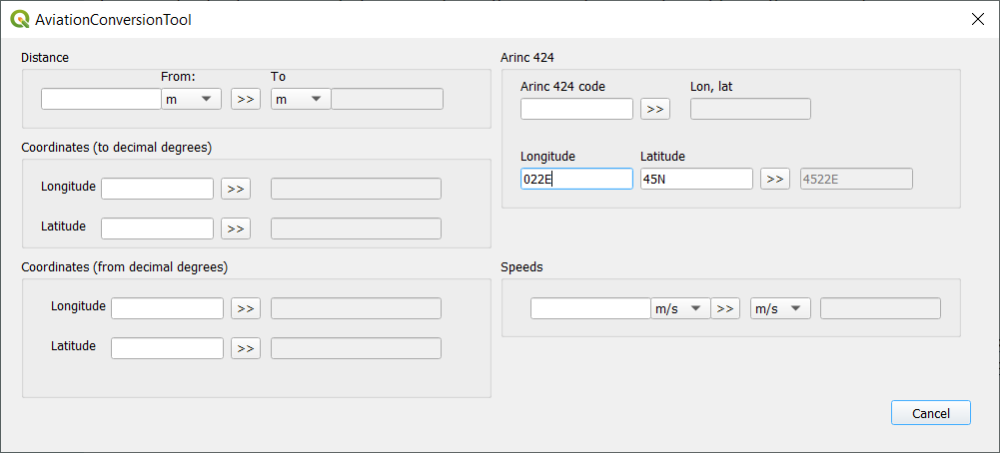

Description
Aviation Conversion Tool plugin allows user to convert values such as distance, coordinate and speed
among
various formats and units of measure that are commonly used in aviation industry.
Usage
To convert value from one unit of measure to another one or from one format to another one just:
- Enter value in soource/original unit of measure or format.
- Choose soource/original and desired unit of measure is necessary - for distance and speeds conversion.
- Hit convert button to convert value to desired unit of measure or format.
In case source value does is not valie or not suppoerted format, message with error will be shown, for example:
- Distance error - positive number required
- Latitude not supperted format:
For more information about each conversion option such as supported coordnate formats refer to approptiate part of this page.
Distance conversion
Coordinates conversion
To decimal degrees
Supported coordinate formats:
- degrees, minutes seconds (DMS) 'compacted' with direction (hemisphere) prefix and sufix, examples: S233021.5555, 1233021.5555W
- degrees, minutes seconds (DMS) 'separated' with direction (hemisphere) prefix and sufix, examples: W 003 09 02.111, 3 9 2.111N
From decimal degress
Full degrees ARINC 424 format conversion
To longitude, latitude
To ARINC424 code
To convert coordinate pair to ARINC 424 code enter longitude and latitude value as full degress with hemisphere suffix:
- longitude: DDDH, example: 020E, 121W
- latitude: DDH, example: 67N, 03S
Notice that leading zeros are required
Speed conversion
To convert speed from one unit to another one just:
- Enter source speed value. Value shule be a positive number.
- Select source unit of measure.
- Select desired unit of measure.
- Hit convert button .